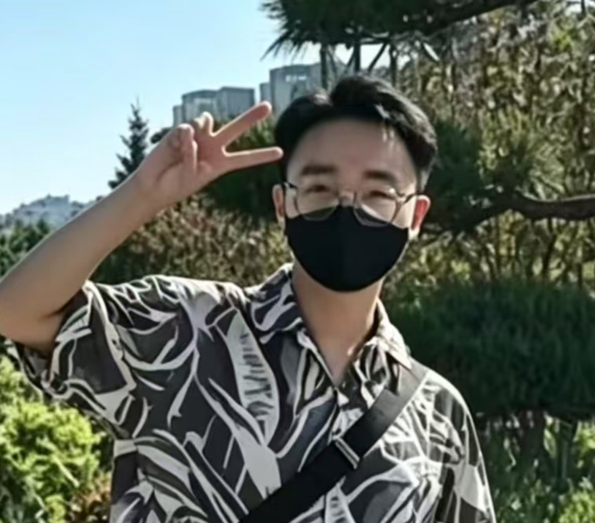
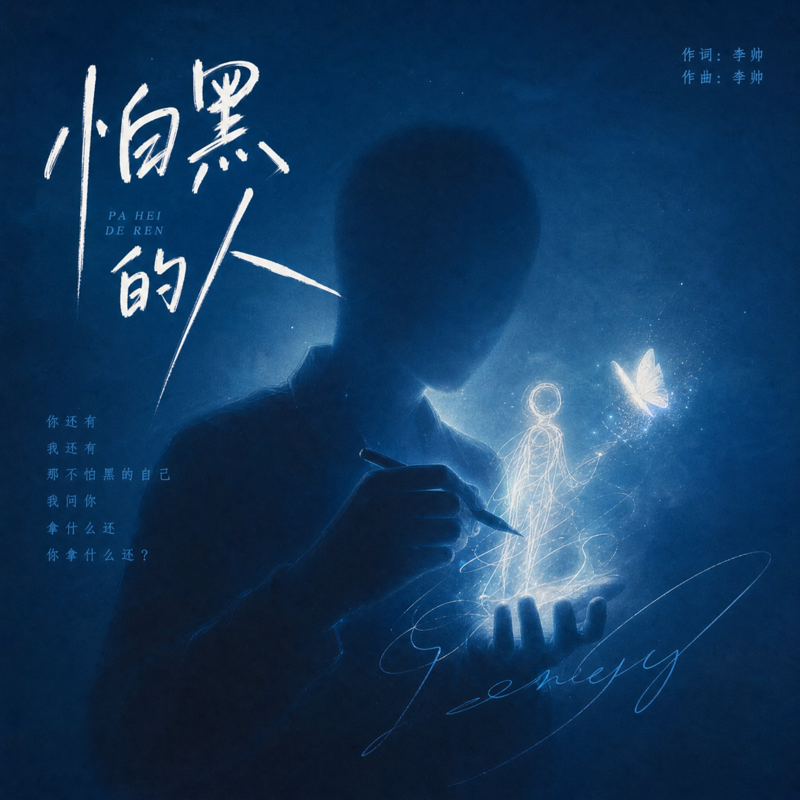

/ PROFILE

LI SHUAIIndependent Visual Designer
独立视觉设计师 · 品牌视觉 / 电商视觉 / 商业视频 / AI视觉表达
LI SHUAI
Visual Designer · 28 · Beijing
4 Years in Brand & E-commerce Visuals
SCROLL
LI SHUAI
SELECTED
WORKS
2020 — 2026
VISUAL
DESIGNER
.
VIEW
Passage
作品集 · 隧道
Experience经历
04
2016
室内 / 空间设计 · Interior / Spatial Design
2019
达城闻庆北京建筑工程 · 建筑设计
2022
北京腾达远志科技 · 电商视觉设计
2026
独立视觉设计师 · Independent Visual Designer / AI MV Creator
ABOUT ME
关于我
我是李帅，一名独立视觉设计师，同时也是原创音乐人（艺名：阿柠乐）。从建筑设计到电商视觉，再到 AI 影像与音乐 MV，我一直用视觉语言讲述真实的故事。
多年商业设计经验覆盖品牌视觉、电商详情页、视频广告、包装设计等领域。我相信好的设计不只是好看，更要解决问题、传递情绪、建立信任。现在专注于 AI 生成影像与商业视觉的结合，为品牌创造有记忆点的视觉体验。
4Y+
零外包独立交付
60%+
AI 工作流提效
12+
电商模板沉淀
双11/618
大促视觉经验

《怕黑的人》
关于爱情里把自己弄丢了，又希望可以找回那个爱哭爱笑的自己。QQ音乐、汽水音乐、网易云音乐均可收听。
LET'S
MAKE
SOMETHING
GOOD.
AVAILABLE FOR FREELANCE / COLLABORATION / FULL-TIME